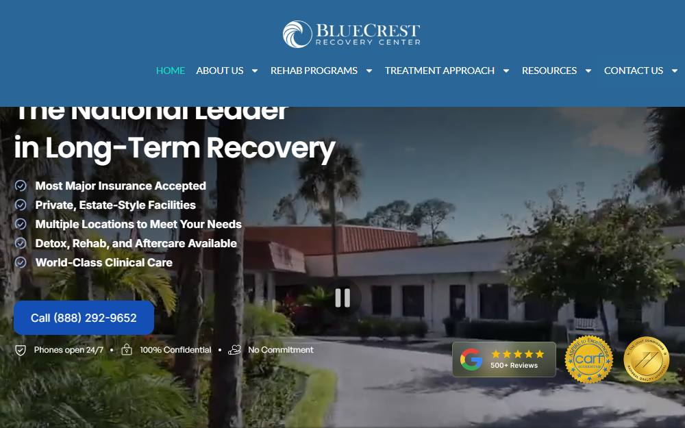
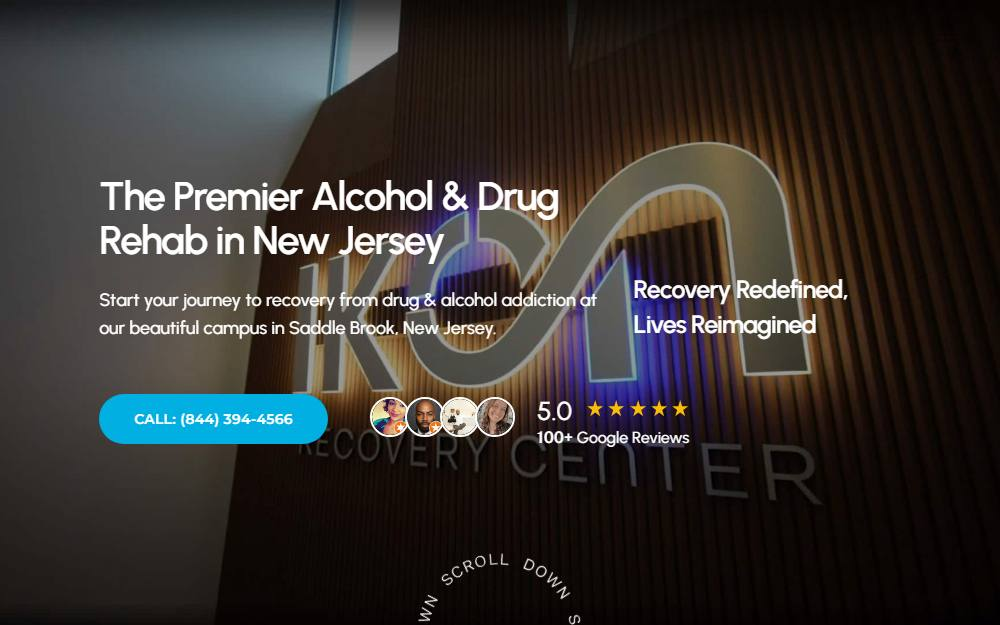
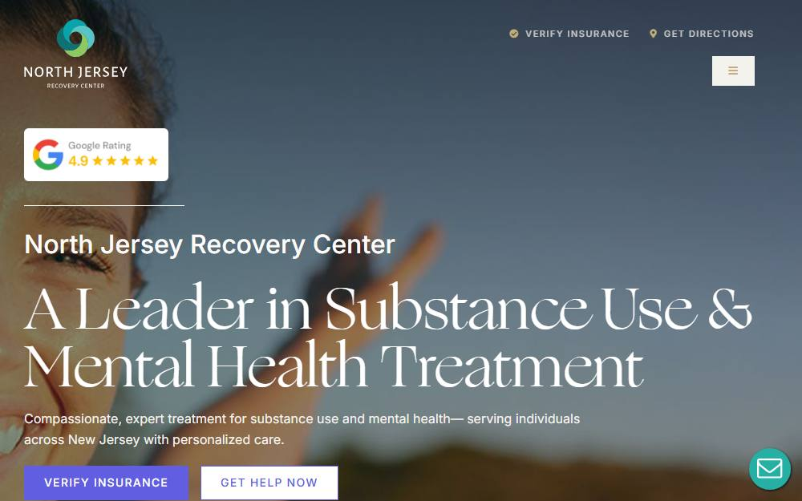
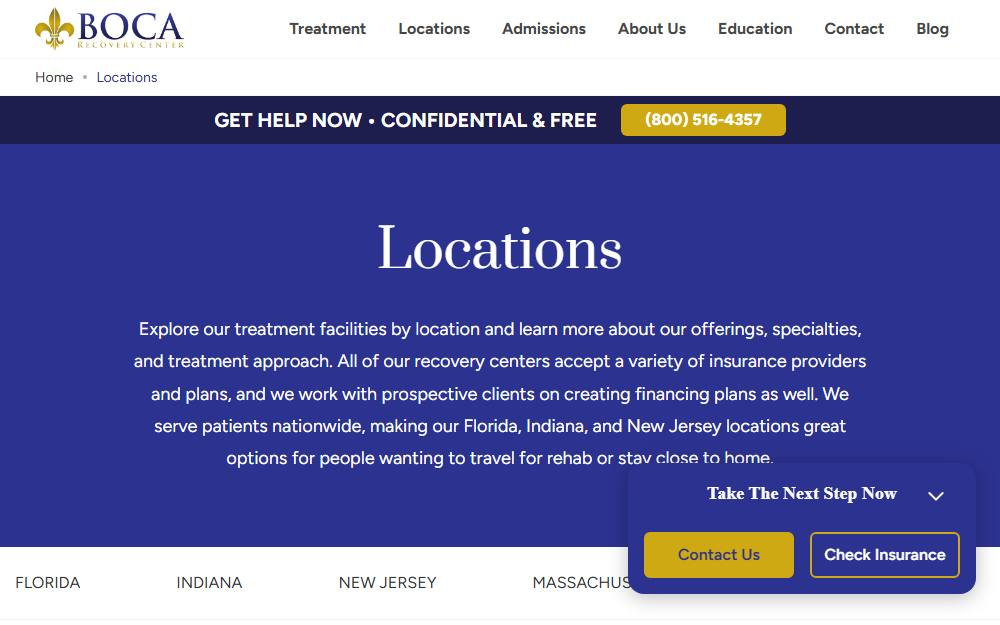

Level of care first
Detox, residential, partial care, intensive outpatient and outpatient are different products. Matching the level to the person matters more than the brand.
Comparison guide · Reviewed August 2026
A clear-eyed comparison of established treatment centers across Bergen, Passaic and Essex counties—what they treat, how they differ, and the questions worth asking before you call.
“Best” depends on what you need. We explain trade-offs so you can shortlist with confidence. The right center is the one that can safely treat your substance use, mental health, medical needs and recovery goals—not simply the one with the newest building.
Detox, residential, partial care, intensive outpatient and outpatient are different products. Matching the level to the person matters more than the brand.
New Jersey licenses substance use and mental health separately. Accreditation by CARF or The Joint Commission is voluntary and worth asking about.
Several centers list services delivered by referral rather than in house. Ask which parts happen at the address you will be driving to.
Not a one-size-fits-all ranking. Use the filters to find a closer fit, then read the full review of any center.

A dual-licensed substance use and mental health center with published program schedules, and an evening intensive outpatient track built around people who are still working.
Our preferred overall option for structured care with a real mental health license. Both license numbers are published, which is rare in this market and easy to verify. A specialized program for first responders, health and wellness programming, and a robust alumni network that brings in motivational speakers—pro wrestler Zack Clayton and Kendrick Perkins, the former NBA champion, have both appeared. Substantial return-to-work and case management credentials alongside licensed clinical and medical staff. Confirm current openings and which payers are in network for your specific plan.
Woodland Park, NJ · Passaic County

The most complete ladder in this group, running from medical detox through residential and down to outpatient, with a stated 12-step and holistic model.
Verification note
No state license number published
Three seals displayed, all from bodies that are correct for this jurisdiction. No license number is published, so nothing can be checked against the state directory.
Best fit when the full continuum matters and someone may need to start at detox and step down without changing providers. The 12-step emphasis suits people who want it and is worth discussing if you do not. Private insurance only.
Saddle Brook, NJ · Bergen County

A broad outpatient offering with several named specialty tracks and a published state license number, but detox is arranged through partners rather than delivered on site.
Verification note
Licensing statement names a California agency for a New Jersey facility
Publishes "Licensed by the State Department of Healthcare Services, License 2000964. Expiration 11/30/2026." The Department of Health Care Services is California's agency. New Jersey licenses addiction treatment through DMHAS and the Department of Health and has no department of that name, so this claim does not verify for a Saddle Brook, NJ facility. NAADAC and NALGAP are membership associations, not accreditors, and are displayed as badges alongside accreditation seals.
Strong on published credentials, weakest on continuity. The site states plainly that detox and sober living are not provided in house, which means a handoff at the two points where handoffs fail most often. Ask exactly which partner handles withdrawal management and who holds clinical responsibility during it.
Fair Lawn, NJ · Bergen County

An outpatient program with unusually specific published detail on medication-assisted treatment, and one of the few in this group stating it accepts Medicare and Medicaid.
Verification note
No state license number published
No state license published. LegitScript certification is an advertising and payment-eligibility check, not a clinical inspection, and is weighted accordingly.
Best documented for medication-assisted treatment and the strongest option here on public insurance access. There is no residential level, so confirm the plan if withdrawal management beyond outpatient is likely.
Fair Lawn, NJ · Bergen County

Publishes two distinct tracks, one for mental health and one for substance use, and lists an evening intensive outpatient option alongside the standard daytime schedule.
Verification note
No state license number published · No accreditation published
Neither licensure nor accreditation is published anywhere on the site.
A reasonable option for working schedules with a clearly separated mental health track. No accreditation or license detail is published, so ask for the license number and its expiration date before you commit.
Englewood, NJ · Bergen County

The Northern New Jersey site of a multi-state operator, listing medical detox, mental health services and specialized trauma and eating disorder therapy alongside outpatient care.
Verification note
No location-level license published · Accreditation not stated for the Englewood site
Company-wide materials only. Nothing verifiable is published for the Englewood address specifically, and a multi-state operator's national page is not evidence about one location.
Worth a look for specialized therapy needs, particularly trauma and eating disorders, which few centers in this group name at all. Location-level program detail is thinner than the national pages suggest, so confirm what runs at Englewood specifically rather than company-wide.
*Provider-reported information, current as of August 2026; confirm before admission. Inclusion does not imply endorsement. Details can change.
We assessed each provider’s publicly available information across four practical dimensions, weighted equally at 25 percent each.
Are the programs, schedules and clinical staffing described specifically enough to know what you are buying?
What medical and psychiatric services are named, and are they delivered on site or by referral?
How many levels of care are offered, and what therapies and specialty tracks are documented?
What happens after the program ends—step-down, alumni support, family involvement?
Our scores measure the clarity and breadth of publicly available information—not treatment outcomes or patient satisfaction. They are not patient reviews, clinical outcome ratings or guarantees. A center may deliver excellent care and publish very little about it. Always confirm current licensing, clinical staff, costs and admission suitability directly with the center.
Not sure where to begin? Choose what matters most. We’ll point you toward the most relevant questions and center types—we collect nothing and nothing is sent anywhere.
What is the most urgent concern?
How will care be paid for?
Sometimes. Alcohol and benzodiazepine withdrawal can be medically dangerous and may require supervised detox first. Opioid withdrawal is rarely life-threatening but is often the reason people stop trying. Ask each center to assess this on the phone before you choose a level of care.
Partial care is a full-day program, typically five days a week. Intensive outpatient is a few hours a day, several days a week, and is designed so people can keep working or caring for family. Outpatient is lighter still. The right level depends on medical risk, home stability and how much structure is needed.
At most centers here, no—their license covers substance use. New Jersey licenses mental health separately, and a center holding a standalone mental health license can admit someone whose primary problem is anxiety, depression, PTSD or bipolar disorder with no substance use involved. Ask which license the center holds.
Often, yes. Ask whether family therapy is live or online, who facilitates it, when it begins and how the center handles confidentiality and consent.
Most centers here bill insurance and will verify benefits before intake. Cost varies enormously by level of care and plan. Ask for the expected out-of-pocket figure in writing, and ask whether the center is in network or billing as out of network.
Pushing harder usually backfires. Prepare the practical details in advance—insurance, schedule, transport—so that when the person is willing, nothing stands in the way for the next few hours. Several centers offer family consultations for exactly this.
Use this guide to make a shortlist, then contact each center directly. If someone is in immediate danger, call local emergency services.
Back to the six centers